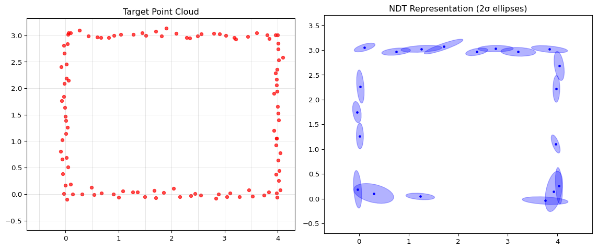

from matplotlib.patches import Ellipsedef compute_ndt(points, cell_size, x_range, y_range):"""Compute NDT representation of point cloud.""" cells = {}for i inrange(points.shape[1]): x, y = points[:, i]# Determine cell indices cx =int(np.floor((x - x_range[0]) / cell_size)) cy =int(np.floor((y - y_range[0]) / cell_size)) key = (cx, cy)if key notin cells: cells[key] = [] cells[key].append(points[:, i])# Compute statistics for each cell ndt = {}for key, pts in cells.items(): pts = np.array(pts).T # 2 x nif pts.shape[1] >=3: # Need at least 3 points for covariance mean = pts.mean(axis=1) centered = pts - mean.reshape(2, 1) cov = (centered @ centered.T) / (pts.shape[1] -1)# Add small regularization for numerical stability cov +=0.001* np.eye(2) ndt[key] = {'mean': mean, 'cov': cov, 'n_points': pts.shape[1]}return ndtdef draw_ellipse(ax, mean, cov, n_std=2, **kwargs):"""Draw covariance ellipse.""" eigenvalues, eigenvectors = np.linalg.eigh(cov) angle = np.degrees(np.arctan2(eigenvectors[1, 0], eigenvectors[0, 0])) width, height =2* n_std * np.sqrt(eigenvalues) ellipse = Ellipse(mean, width, height, angle=angle, **kwargs) ax.add_patch(ellipse)# Compute NDTcell_size =0.5ndt = compute_ndt(target, cell_size, (-0.5, 4.5), (-0.5, 3.5))fig, axes = plt.subplots(1, 2, figsize=(12, 5))# Left: Points with gridaxes[0].scatter(target[0], target[1], c='red', s=20, alpha=0.7)for x in np.arange(-0.5, 4.5, cell_size): axes[0].axvline(x, color='gray', alpha=0.3, linewidth=0.5)for y in np.arange(-0.5, 3.5, cell_size): axes[0].axhline(y, color='gray', alpha=0.3, linewidth=0.5)axes[0].set_title('Target Point Cloud')axes[0].set_aspect('equal')# Right: NDT representationfor key, cell in ndt.items(): draw_ellipse(axes[1], cell['mean'], cell['cov'], n_std=2, fill=True, alpha=0.3, color='blue', edgecolor='blue') axes[1].plot(cell['mean'][0], cell['mean'][1], 'b.', markersize=5)axes[1].set_xlim(-0.7, 4.7); axes[1].set_ylim(-0.7, 3.7)axes[1].set_title('NDT Representation (2σ ellipses)')axes[1].set_aspect('equal')plt.tight_layout()plt.show()

The Gaussian Model
Each cell’s Gaussian defines a probability density:
Interpretation: High probability where points are dense, low where sparse
A transformed source point “scores” high if it lands near a cell’s mean
NDT Alignment
The NDT Cost Function
Given transformation parameters :
Equivalently (dropping constants):
where is the cell containing transformed point
Cost Function Properties
Smooth within each cell: Quadratic in transformation parameters
Discontinuous at cell boundaries: Cell assignment changes
Solution:
Use larger cells (smoother but less precise)
Or use overlapping grids
Or use soft cell assignment
NDT Algorithm: Pseudocode
Input: Source points P, NDT of target (cells with μ, Σ)
Output: Transformation T = (θ, tx, ty)
Initialize T = (0, 0, 0)
repeat:
# Transform source points
P' = apply T to P
# Compute cost and gradient
L = 0, ∇L = 0
for each p' in P':
cell = find_cell(p')
if cell is occupied:
L += Mahalanobis_distance(p', μ_cell, Σ_cell)
∇L += gradient_contribution(p', μ_cell, Σ_cell)
# Update transformation (gradient descent or Newton)
T = T - α * ∇L (or Newton step)
until convergence
return T
Computing the Gradient
For a single point transformed to :
Chain rule: Need derivatives of:
Mahalanobis distance w.r.t.
Transformed point w.r.t. parameters
Gradient Derivation
Let and cost term
Gradient w.r.t. :
Jacobian of transformation:
NDT Implementation
def rotation_matrix(theta): c, s = np.cos(theta), np.sin(theta)return np.array([[c, -s], [s, c]])def transform_points(theta, t, points):"""Apply transformation to points (2 x N).""" R = rotation_matrix(theta)return R @ points + t.reshape(2, 1)def ndt_cost_and_gradient(params, source, ndt, cell_size, x_range, y_range):"""Compute NDT cost and gradient.""" theta, tx, ty = params t = np.array([tx, ty])# Transform source transformed = transform_points(theta, t, source) cost =0.0 grad = np.zeros(3) # [d/dtheta, d/dtx, d/dty]for i inrange(source.shape[1]): p = source[:, i] p_trans = transformed[:, i]# Find cell cx =int(np.floor((p_trans[0] - x_range[0]) / cell_size)) cy =int(np.floor((p_trans[1] - y_range[0]) / cell_size)) key = (cx, cy)if key in ndt: mu = ndt[key]['mean'] cov_inv = np.linalg.inv(ndt[key]['cov']) d = p_trans - mu cost += d @ cov_inv @ d# Gradient grad_p =2* cov_inv @ d# Jacobian of transformation c, s = np.cos(theta), np.sin(theta) dp_dtheta = np.array([-p[0]*s - p[1]*c, p[0]*c - p[1]*s]) grad[0] += grad_p @ dp_dtheta grad[1] += grad_p[0] grad[2] += grad_p[1]return cost, grad
NDT Optimization
def ndt_align(source, ndt, cell_size, x_range, y_range, max_iters=100, lr=0.01, tol=1e-6):"""Align source to target using NDT.""" params = np.array([0.0, 0.0, 0.0]) # theta, tx, ty costs = []for _ inrange(max_iters): cost, grad = ndt_cost_and_gradient( params, source, ndt, cell_size, x_range, y_range) costs.append(cost)# Gradient descent with adaptive step size step = lr * grad / (np.linalg.norm(grad) +1e-8) params = params - stepiflen(costs) >1andabs(costs[-2] - costs[-1]) < tol:breakreturn params, costs